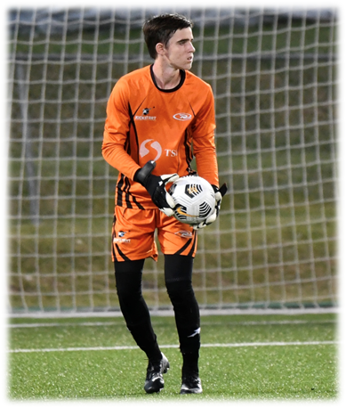

BENJAMIN EVERETT
GOALKEEPER

PROFILE
Explosive, agile and highly motivated goalkeeper, combining exceptional reflexes, positional awareness, precise footwork, strong distribution and tactical leadership. My ability to read and anticipate plays and communicate with my team allows me to proactively and positively influence outcomes.
CONTACT
📞 +1 (246) 254-7443 
✉️ ben@beneverettgk.com


DETAILS
Date of birth: October 12, 2007
Passports: Barbados 🇧🇧 / United States 🇺🇸
Residence: Valencia, Spain 🇪🇸 / Barbados 🇧🇧
Height: 1.79m / 5'10.5"
Weight: 74kg / 163lbs
VIDEO
https://highlights.beneverettgk.com
REFERENCES
Renaldo Gilkes, CONCACAF A
Technical Director, Kickstart Rush FC
rgilkes@kickstartrush.com
+1 (246) 825-0607
Daniel Rowe M.Sc. CSCS
Head Performance Coach, Become Elite Academy
becomeelite246@gmail.com
+1 (246) 834-0847
Christian Benjamin, USSF, USC
Owner, KeeperStop.com
christian@keeperstop.com
+1 (508) 221-6819
Chad Bynoe, CONCACAF C
Assistant Coach, Kickstart Rush 1st Team
+1 (246) 844-9644
FOOTBALL CAREER
- Spain Rush-SPF Academy, Valencia, Spain, GK – Jan. 2026 – Present
- Barbados U20 National Men's Team, Concacaf U20 Qualifiers – Feb. 24 – Mar. 4 2026
- Kickstart Rush Men's 1st Team, The Prime Minister's Cup
Sep. 1 - Dec. 1 2025 - 2nd Place
6 appearances, 70% Save Percentage (32/46 shots)
🏆 2025 Prime Minister's Cup Best Goalkeeper Award - Kickstart Rush Men's 1st Team, BFA Champions Cup
Jun. - Jul. 2025 – 2nd Place
5 appearances, 1x Clean Sheet, 78% Save Percentage (14/18 shots), 1x Penalty Save, 4x Penalty Shootout Save
🏆 2025 BFA Champion's Cup Best Goalkeeper Award - Kickstart Rush Men's 1st Team, BFA Premier League
Jan. - May. 2025 – 6th Place | 11 appearances, 2x Clean Sheet, 67% Save Percentage - Kickstart Rush Men's 1st Team (2024)
BFA Premier League debut, age 16 – January 2024
11 appearances, 3x Clean Sheets | 3rd Place Finish - Kickstart Rush Men's 1st Team (2023)
BFA Div. 1 debut, age 15 – April 2023
10 appearances, 3x Clean Sheets | Promoted to Premier League - NextUP 2024 Football Combine, Goalkeeper Award – Jun. 2024
- 35th Barbados Cup, Kickstart Rush U17, Champions, GK – Apr. 2024
- Barbados U20 National Men’s Team, Provisional Squad, GK – Jan. 2024
- Rush Soccer International Rush Cup, FL, U16, 3rd Place – Nov. 2023
- Rush South Rush Cup, LA, Rush Select Boys 2, U19 Champions – Aug. 2023
- Kickstart Rush U17, GK – Jan. 2023 – Dec. 2024
- Kickstart Rush U15, CB, RB – Jan. 2021 – Dec. 2022
- Kickstart Rush U9–U13, GK – Jan. 2016 – Dec. 2020
COACHING CAREER
- U9 Head Coach – Kickstart Rush FC – Sep. 2024 – Present
- Youth GK Coach – Kickstart Rush FC – Jan. 2025 – Present
- U9–U13 GK Coach – Joshua James Goalkeeping School – Sep. 2024 – Present
- U17 Assistant Coach – Kickstart Rush FC – Jan. 2025 – Jul. 2025
COACHING CERTIFICATIONS
- U.S. Soccer Federation (USSF-ID: 1000-0000-0234-1846)
- Grassroots 4v4, 7v7, 9v9 Online Coaching Licenses (2025)
- Intro to Grassroots / Safe & Healthy Environments (2025) - Coaching Association of Canada (NCCP# 7006931)
National Coaching Certification Program Level 1 – Nov. 2025
EDUCATION
Homeschooled – grad year 2026